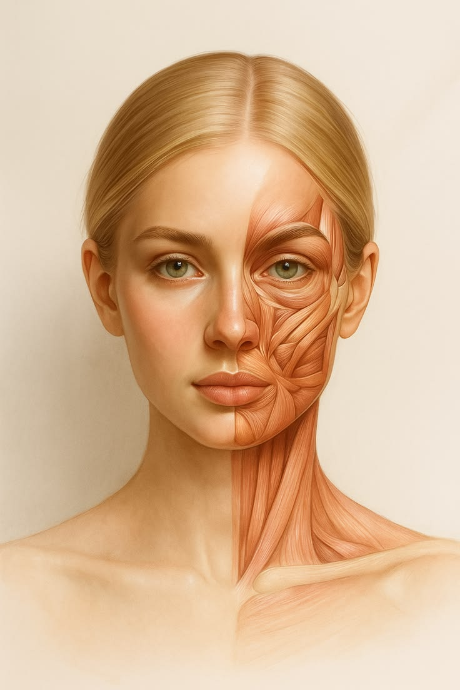

Mapeamento de Pontos de Aplicação
Selecione o produto e toque na tela para registrar a dose
Produto / Cor
Toxina Botulínica (Azul)
Bioestimulador - Sculptra (Rosa)
Preenchedor Ácido Hialurônico (Verde)
Fios de PDO (Roxo)
Limpar Mapa
Salvar / Exportar Imagem
